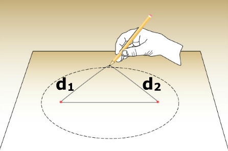

Kepler's first law states that all planets move in ellipses with the Sun at one focus. An ellipse is the set of points that are equidistant from two special points known as foci. A simple technique for drawing an ellipse is shown.
An ellipse is described by the semi-major axis "a" and eccentricity "e". The semi-major axis describes the size and is half the long dimension of an ellipse. The eccentricity describes the shape of the ellipse. A circle may be viewed as a special case of an ellipse with an eccentricity equal to zero. As the ellipse becomes more elongated the eccentricity approaches 1.
To determine the eccentricity of an ellipse we need to use the formula e=c/a. One can determine the semi-major axis "a" by measureing the long axis on an ellipse and dividing by 2. The distance from the center of the ellipse to a focus is represented by "c".
| c | 20 | ||||
| Eccentricity: e = | ––– | = | ––– | = | 0.4 (e less than 0.9) |
| a | 50 |